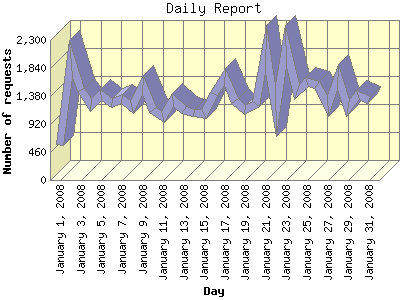

Report generated by Analog 6.0 and Report Magic 2.21
|
Web Server Statistics for "Harish Narayanan (hnarayan) - January 2008" Report generated by Analog 6.0 and Report Magic 2.21 |
The Daily Report identifies the activity for each day within the reporting period. Remember that one page hit can result in several server requests as the images for each page are loaded.

| Day | Number of requests | Number of bytes transferred | Percentage of the bytes | Percentage of the requests | |
|---|---|---|---|---|---|
| 1. | January 1, 2008 | 576 | 38.186 MB | 1.93% | 1.35% |
| 2. | January 2, 2008 | 1,988 | 101.194 MB | 5.10% | 4.67% |
| 3. | January 3, 2008 | 1,474 | 51.919 MB | 2.62% | 3.46% |
| 4. | January 4, 2008 | 1,231 | 45.934 MB | 2.32% | 2.89% |
| 5. | January 5, 2008 | 1,402 | 157.581 MB | 7.94% | 3.29% |
| 6. | January 6, 2008 | 1,263 | 76.986 MB | 3.88% | 2.97% |
| 7. | January 7, 2008 | 1,329 | 45.578 MB | 2.30% | 3.12% |
| 8. | January 8, 2008 | 1,204 | 66.172 MB | 3.34% | 2.83% |
| 9. | January 9, 2008 | 1,559 | 104.493 MB | 5.27% | 3.66% |
| 10. | January 10, 2008 | 1,156 | 92.411 MB | 4.66% | 2.71% |
| 11. | January 11, 2008 | 1,032 | 31.702 MB | 1.60% | 2.42% |
| 12. | January 12, 2008 | 1,320 | 39.229 MB | 1.98% | 3.10% |
| 13. | January 13, 2008 | 1,145 | 38.155 MB | 1.92% | 2.69% |
| 14. | January 14, 2008 | 1,103 | 36.529 MB | 1.84% | 2.59% |
| 15. | January 15, 2008 | 1,080 | 26.399 MB | 1.33% | 2.54% |
| 16. | January 16, 2008 | 1,413 | 111.981 MB | 5.64% | 3.32% |
| 17. | January 17, 2008 | 1,685 | 65.745 MB | 3.31% | 3.96% |
| 18. | January 18, 2008 | 1,303 | 57.176 MB | 2.88% | 3.06% |
| 19. | January 19, 2008 | 1,156 | 49.757 MB | 2.51% | 2.71% |
| 20. | January 20, 2008 | 1,255 | 48.485 MB | 2.44% | 2.95% |
| 21. | January 21, 2008 | 2,159 | 112.118 MB | 5.65% | 5.07% |
| 22. | January 22, 2008 | 1,136 | 44.094 MB | 2.22% | 2.67% |
| 23. | January 23, 2008 | 2,200 | 101.829 MB | 5.13% | 5.17% |
| 24. | January 24, 2008 | 1,446 | 40.831 MB | 2.06% | 3.40% |
| 25. | January 25, 2008 | 1,604 | 49.187 MB | 2.48% | 3.77% |
| 26. | January 26, 2008 | 1,560 | 61.250 MB | 3.09% | 3.66% |
| 27. | January 27, 2008 | 1,217 | 40.165 MB | 2.02% | 2.86% |
| 28. | January 28, 2008 | 1,691 | 74.911 MB | 3.78% | 3.97% |
| 29. | January 29, 2008 | 1,187 | 56.337 MB | 2.84% | 2.79% |
| 30. | January 30, 2008 | 1,389 | 37.874 MB | 1.91% | 3.26% |
| 31. | January 31, 2008 | 1,318 | 79.355 MB | 4.00% | 3.10% |
Most active day January 23, 2008 : 1,045 pages sent. 2,200 requests handled. 106,775,248.00 served.
Daily average: 1,373 requests handled. 63.986 MB served.
This report was generated on March 24, 2008 11:59.
Report time frame January 1, 2008 00:07 to January 31, 2008 23:58.
| Web statistics report produced by: | |
 Analog 6.0 Analog 6.0 |  Report Magic 2.21 Report Magic 2.21 |